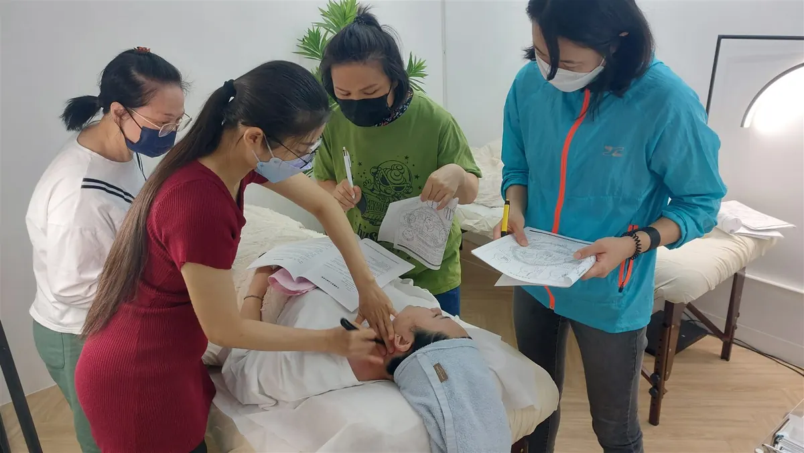

The Bojin Journal · Jaw & Neck
A softer jawline and a little double chin? A gentle jaw and neck release

If you've noticed your jaw looks a little less defined than it used to, and there's a bit of softness under the chin, you're not imagining it, and it usually isn't only about weight. A lot of what you're seeing is fluid that has pooled, a jaw that clenches all day without you noticing, and hours spent looking down at a screen, all pulling the lower face down. A few minutes of gentle release, a few times a week, can help the area look a little more defined and rested. It won't remove fat or hand you a surgical jawline, and I'd rather tell you that up front.
Why does my jawline soften and my chin look fuller?
A few things tend to happen at once. Fluid moves through the face all day, and when it's slow to move on, after a salty dinner, a poor night's sleep, or a long flight, it settles in the lowest, softest places, which for many of us is right along the jaw and under the chin. That's not fat. It's puffiness, and it comes and goes.
Then there's the jaw itself. Most of us clench without noticing: through traffic, through emails, through the night. That muscle sits right at the corner of the jaw, and when it stays tight it looks and feels fuller and more set. Add the way we all live now, chins tipped down toward a phone for hours, and the skin and muscle of the front of the neck get short and slack while everything above drifts downward. A laptop camera makes all of this more visible, not less: if it's specifically your video calls that have you self-conscious, a 2-minute jaw reset before your next call is built for exactly that moment.
So a softer jawline is often less about how much you weigh and more about fluid, tension, and posture. That's good news, because those are the parts that respond to a little attention.
How the Bojin Method helps the lower face
First, what bojin is. If you already know gua sha, you have a head start: bojin grew from the same family of Chinese hands-on face care, so it will feel familiar. It's still its own deliberate method. What makes it work is three things: the order you work in, the angle you hold the tool, and the exact spot you're working.
The traditional tool is a bojin stick: a slim, polished stainless steel tool shaped to follow the face. You can start with clean fingertips or a smooth gua sha stone you already own while you learn, but the stick is what the method was built around. The pressure is not the barely-there touch people assume, nor is it forceful. It's the right, comfortable pressure for you: enough to be felt, never enough to hurt or drag the skin.
For the lower face, that method matters. Working the tight corner of the jaw at the right angle, then moving fluid down and off the neck in the right order, is what helps the area look a little more defined. A tool on its own comes with no method attached: no one shows you the order, the angle, or the exact place to work. Add that method, and the same few minutes feel different.
Comfortable pressure matters more than pressing hard or barely touching. What makes bojin work is holding the right angle and working in the right order and place. Order, angle, and placement are the method.

Your jaw and neck release
Use a bojin stick or clean fingertips. Put on a little oil or cream first so nothing drags across the skin. Work in order, follow the angle of the bone, and use the right, comfortable pressure: firm enough to feel, never featherlight and never forceful. The whole thing takes about three minutes.

Warm and settle
Rest your warm hands over your jaw and the front of your neck for a few slow breaths. Let your shoulders drop and your teeth unclench. This tells the area to relax before you start, so you're not working against a tight jaw.
Read your face first
Lightly feel along your jaw and under your chin. Notice where it feels fuller, tighter, or more tender on one side. What you find sets the order: you'll spend a little longer where it needs it, and it keeps you working with your face instead of by rote.
Release the corner of the jaw
Bring the stick or your fingertips to the tight muscle at the back corner of the jaw, right below the ear. Angle the tool to follow the jawbone and make slow, short passes down and forward along the bone. This is the clench spot, so keep the pressure comfortable and let it soften.
Work along and under the jawline
From that corner, glide down the length of the jawbone toward the chin, keeping the angle tucked right under the bone rather than on top of it. A few unhurried passes on each side helps ease fullness right where the jaw looks least defined.
Finish down the sides of the neck
This is the step people skip, and it's the one that matters most. From under the jaw, sweep down the sides of the neck to the base, one long slow pass after another. Working down and off the neck gives the fluid you moved somewhere to go. Otherwise it settles back.
What can I expect?
Most people notice the everyday wins first: the jaw feels less tight and set, the area under the chin looks a little less puffy, and the lower face reads as more rested and slightly more defined, especially on a morning after you've slept poorly or eaten salty food. Done a few times a week, it becomes a calming few minutes that also happens to help your serum sink in. That's a real, worthwhile result.
Now the honest limit. This is a soothing self-care ritual, not a treatment. It won't remove fat, it won't erase a double chin, and it won't give you a surgical jawline. No gentle habit can promise that, and anyone who says otherwise isn't being straight with you. What it can do is ease fluid and tension so the area looks its best. Anything sudden, one-sided, painful, or a lump that doesn't come and go is worth seeing your doctor about, not something to work on at home.
A softer jawline is a normal part of how faces change, and it's not a flaw to fix so much as an area to care for. A few honest minutes a day, worked in the right order, won't rewrite your face, but it can help it feel looser, look a little brighter, and feel like yours again.
Quick answers
Can bojin get rid of my double chin?
No, and I won't pretend it can. A little fullness under the chin is often pooled fluid rather than fat, so releasing the jaw and neck can help that area look less puffy and a bit more defined. But it can't remove fat or give you a sculpted jawline. That's an honest limit worth knowing before you start.
How often should I do this jaw and neck release?
Two to three times a week is plenty, and consistency matters more than length. Three unhurried minutes each morning or evening, always finishing down the neck, does more than a long forceful session now and then. If the area feels tender, do less and keep the pressure gentle.
Is bojin a firmer version of gua sha?
They come from the same family of Chinese hands-on face care, so if you know gua sha this will feel familiar. But bojin is its own deliberate method: it's built around the order you work in, the angle you hold the tool, and the exact spot, rather than how hard you press. I'd think of it as its own approach, not a version of anything else.
Do I need a special tool, or can I use my fingers?
You can start with clean fingertips, or a smooth gua sha stone you already own, while you learn the moves. The traditional tool is a bojin stick, a slim, polished stainless steel tool shaped to follow the face, and it's what the method was built around. Either way, the method matters more than the tool.
See the order, angle, and spot for yourself
Reading about the jaw and neck release is one thing; watching it is another. My free 3-minute video walks you through the exact order to work in, the angle to hold, and the spots to focus on, so you can follow along tonight. Come see how a few calm minutes can help your lower face look a little more rested.
Watch the free 3-min videoYu-Ting Lan is a Taiwan-based international bojin instructor and the founder of Héhé Studio. She has taught her bojin method to more than a thousand students, from complete beginners to grandmothers, across Taiwan, Hong Kong, and Malaysia.